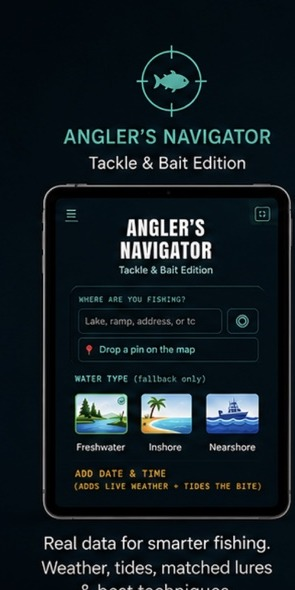

Tackle & Bait Edition
Angler’s Navigator
Enter where and when you’re fishing and get real-world weather, tides, likely species, matched Z-Man lures, and clear directions for how to fish them.
- Open-Meteo weather data
- NOAA tide information
- iNaturalist observations
- AI semantic lure matching
- Location-aware recommendations
- Fishing technique guidance
